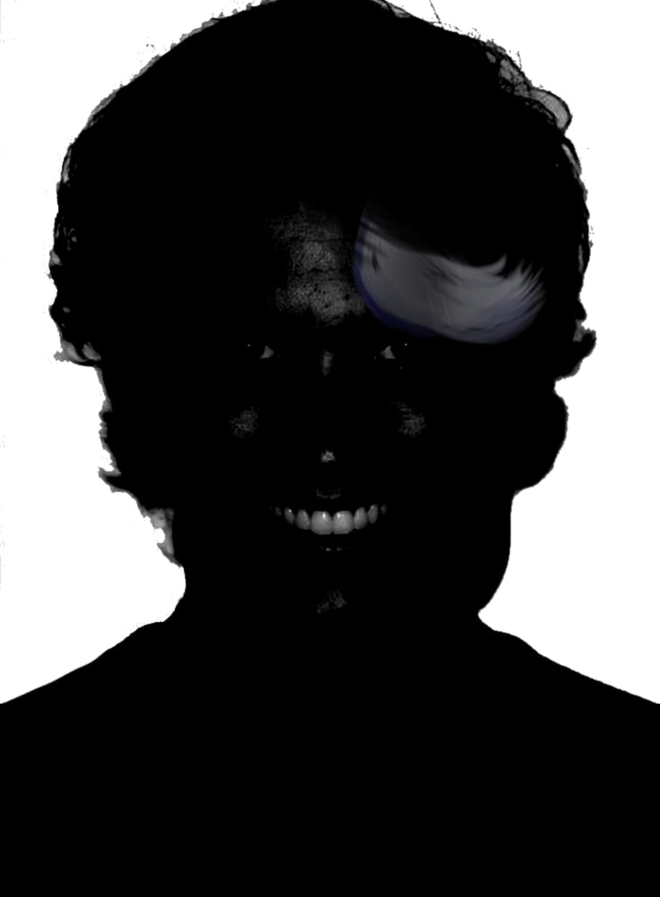

O Protocolo Alfa foi ativado em 18 de julho de 1994 após o desaparecimento completo de uma patrulha militar brasileira durante operação de vigilância em áreas não mapeadas da Floresta Amazônica. A missão liderada por Marcos Moderno, veterano de reconhecimento da selva, tinha como objetivo a verificação de rumores sobre figuras hostis não humanas na região.
A última comunicação recebida da equipe mencionava “sombras nas árvores” e “sussurros imitando vozes conhecidas”. Acredita-se que entidades hostis estariam testando o comportamento humano e capacidade de rastreio em área de floresta densa.
Os trechos foram citados no relatório, mas a ordem em que foram transmitidos não está confirmada.
Toque em um nome para abrir o registro.
| Nome | Função | Status |
|---|---|---|
| Marcos Moderno | Líder de patrulha | Desaparecido (presumido morto) |
| Veterano de reconhecimento da selva. Liderou a missão de verificação de rumores sobre figuras hostis não humanas. Situação: desaparecido (presumido morto). | ||
| Caio Ferreira | Especialista em rastreamento | Desaparecido |
| Integrante da patrulha cujo desaparecimento motivou a ativação do protocolo. Sem informações adicionais anexadas. | ||
| Rafael Tavares | Operador de rádio | Desaparecido |
| Integrante da patrulha cujo desaparecimento motivou a ativação do protocolo. Sem informações adicionais anexadas. | ||
| Patrícia V. Lima | Oficial de inteligência | Desaparecida |
| Integrante da patrulha cujo desaparecimento motivou a ativação do protocolo. Sem informações adicionais anexadas. | ||
Entidade(s) suspeita(s) de serem hostis metamórficas, com habilidades vocais miméticas e deslocamento não rastreável. Foi mencionado um “sinal vermelho pulsante” antes da interrupção final da transmissão. Há suspeitas de interferência psíquica. Câmeras térmicas retornaram com calor desproporcional em zonas onde não havia vida detectada.
Toque em um indício para ver o que o relatório diz sobre ele.
Marque cada recomendação ao confirmar a leitura.
0 de 3 confirmadas
Imagem complementar anexada ao protocolo.
